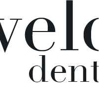

These are the colors used on Downtown Dental's site. Copy the hexcodes to use the color. Changes in opacity are accepted.
#171C20
#F0DD49
#8C9391
#FFFFFF
Website elements for Downtown Dental's site include the navigation bar, icons, buttons, and a divider. These are visual elements used to direct, label, highlight, and divide content to make the user's experience fluid and enjoyable.
Home
About
Contact Us
Reviews
Financial
Textures, patterns and background images are used to add personality and give the site an overall polished look.
The typefaces used are Didot for headlines, and Baskerville for paragraphs. All line height is 1.4 times the font-size. Please use the following sizes.
Paragraphs are Baskerville Regular at 18px.